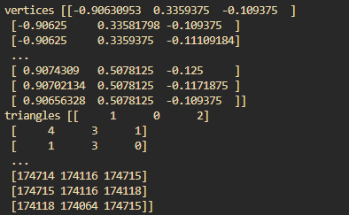

Introduction：
背景与问题：
- 当前的 3D 生成模型面临巨大挑战，特别是在生成高质量的 3D 对象时。尽管近年来通过扩散模型取得了显著的进展，这些模型在 3D 场景生成方面仍存在很多问题。
- 传统的生成模型（如 GANs）往往在高维度数据处理时表现不佳。现有的 3D 生成方法要么计算量过大，要么在生成复杂细节时能力不足。
Wavelet Transform 的优势：
- Wavelet Transform（小波变换）因其优秀的时频分辨能力，能够有效地对 3D 数据进行压缩和表达。它在图像生成中已被证明能减少生成过程中的参数和计算复杂度。
- 论文提出使用小波编码来有效表示 3D 数据，从而大大减少模型的计算成本，同时保留足够的特征信息。
Wala 模型的贡献：
- 提出了 Wavelet Latent Diffusion (Wala) 模型，该模型结合了扩散模型和小波编码，旨在在低参数量和高生成质量之间找到平衡。
- Wala 模型通过使用小波变换编码器有效地压缩 3D 数据，从而实现了更紧凑且高效的生成过程。与传统扩散模型相比，Wala 模型能够在不牺牲生成质量的情况下大幅减少参数量。
创新性：
- Wala 模型的创新之处在于它通过小波编码来生成 3D 数据，利用扩散模型的优势，同时通过对潜在空间的压缩优化，在高效生成的同时避免了对计算资源的过度依赖。
总结：
Wala 模型通过引入小波编码和扩散过程，为 3D 生成任务提供了一种高效且紧凑的解决方案，它有效地平衡了生成质量和计算效率，为生成大规模 3D 对象开辟了新天地。
Related Work
1. 生成模型的演变
该部分首先回顾了生成模型（Generative Models）的发展，尤其是在深度学习领域。生成模型的目标是学习数据分布并能够生成与训练数据相似的新样本。传统方法如GAN（Generative Adversarial Networks）和VAE（Variational Autoencoders）都提出了不同的生成思路，但存在着训练不稳定、模型可扩展性差等问题。
2. 潜在扩散模型（Latent Diffusion Models）
潜在扩散模型（LDMs）作为一种生成方法，已被证明在图像生成任务中表现优异。LDM通过将图像映射到低维潜在空间，再在这个空间中应用扩散过程来生成图像，从而避免了在高维像素空间中直接操作的计算开销。然而，这类方法主要聚焦于二维图像生成，而在处理三维数据时，面临着更多挑战。
3. Wavelet变换和编码
本文特别提出了Wavelet变换在生成模型中的应用。Wavelet变换作为一种高效的信号处理技术，能够对信号进行多尺度、多分辨率的分析。相比于传统的卷积神经网络（CNN）方法，Wavelet变换在空间和频域上的局部化特性使其在编码图像时具有优势。Wavelet编码能够帮助减少计算复杂度并提高效率，尤其是在处理大规模数据时。
4. 三维生成模型
目前大多数生成模型仍然集中在二维图像生成上，而三维数据生成则是一个较为复杂且挑战性的任务。尽管已经有一些方法尝试将扩散模型扩展到三维空间，但这些方法往往在计算开销、训练稳定性和效率上存在问题。论文提出的方法通过结合Wavelet编码与潜在扩散模型来处理三维数据，旨在提升生成质量并减小计算复杂度。
5. 大规模生成模型
论文还提到了一些大规模生成模型的工作，例如GPT系列、DALL·E和CLIP等，这些模型的目标是能够生成高质量、多样化的内容，但它们通常依赖于巨大的计算资源。本文提出的Wavelet Latent Diffusion模型，旨在通过更加高效的编码方式，使得模型在维持生成质量的同时，能够有效地扩展到具有数十亿参数的大规模场景。
6. Wavelet与深度学习的结合
最后，论文提到了Wavelet与深度学习结合的研究，Wavelet变换被应用于特征提取、降维和编码的任务中。尽管早期的深度学习模型多依赖于CNN，但随着Wavelet变换在图像处理中的成功应用，它逐渐成为图像生成任务中的一个重要工具。
U-ViT Generative Model
Vision Transformer (ViT) 是一种完全基于Transformer架构的视觉模型。与CNN相比，ViT在处理图像时通过将图像划分为多个固定大小的patches（小块），然后将这些patches展开为向量输入到Transformer中进行处理。这种方法允许模型更好地捕捉图像的全局信息和长距离依赖关系。
U-ViT 是在传统视觉Transformer基础上进一步发展而来的生成模型，它专注于生成任务，尤其是在图像生成和重建任务中。U-ViT结合了自注意力机制（self-attention）和生成对抗网络（GAN）等技术，用于生成高质量的图像。
该模型在图像生成时能够处理图像的高维特征，并通过Transformer的注意力机制生成细节丰富、具有高语义信息的图像。这种方法能够捕捉到局部与全局的图像结构，使得生成的图像更加自然、清晰。
Method
Stage 1: wavelet VQ-VAE
目标： 将可扩散的小波树编码压缩到一个紧密的潜在空间，并且不显著失真
通过一个基于卷积的VQ-VAE的Encoder将输入($W_n$)映射到潜在空间($z_n$)，然后通过一个基于卷积的VQ-VAE的Decoder将潜在空间($z_n$)映射回输入空间($W_n’$)
训练采用了三种损失的组合：
- 重建损失： 最小化输入和重建输入之间的差异
- Codebook损失： 码本嵌入的向量贴合encoder的输出
- commitment损失： encoder 的输出和codebook的嵌入向量之间的差异
代码
latent_module->class Trainer_Condition_Netword->def inference_sample:
condition_features.shape = torch.Size([1, 256, 1024])
img_idx = None
latent_module->class Trainer_Condition_Netword->def save_visualization_obj:
vertics, triangles
vertics.shape = (174716, 3)
triangles.shape = (349428, 3)
